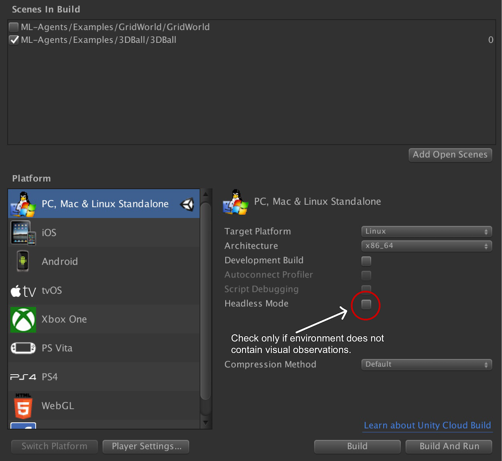

Using Docker For ML-Agents
We currently offer a solution for Windows and Mac users who would like to do training or inference using Docker. This option may be appealing to those who would like to avoid installing Python and TensorFlow themselves. The current setup forces both TensorFlow and Unity to only rely on the CPU for computations. Consequently, our Docker simulation does not use a GPU and uses Xvfb to do visual rendering. Xvfb is a utility that enables ML-Agents (or any other application) to do rendering virtually i.e. it does not assume that the machine running ML-Agents has a GPU or a display attached to it. This means that rich environments which involve agents using camera-based visual observations might be slower.
Requirements
- Unity Linux Build Support Component
- Docker
Setup
Download the Unity Installer and add the Linux Build Support Component
Download and install Docker if you don't have it setup on your machine.
Since Docker runs a container in an environment that is isolated from the host machine, a mounted directory in your host machine is used to share data, e.g. the Unity executable, curriculum files and TensorFlow graph. For convenience, we created an empty
unity-volumedirectory at the root of the repository for this purpose, but feel free to use any other directory. The remainder of this guide assumes that theunity-volumedirectory is the one used.
Usage
Using Docker for ML-Agents involves three steps: building the Unity environment with specific flags, building a Docker container and, finally, running the container. If you are not familiar with building a Unity environment for ML-Agents, please read through our Getting Started with the 3D Balance Ball Example guide first.
Build the Environment
Since Docker typically runs a container sharing a (linux) kernel with the host machine, the Unity environment has to be built for the linux platform. When building a Unity environment, please select the following options from the the Build Settings window:
- Set the Target Platform to
Linux - Set the Architecture to
x86_64 - If the environment does not contain visual observations, you can select the
headlessoption here.
Then click Build, pick an environment name (e.g. 3DBall) and set the output directory to unity-volume. After building, ensure that the file <environment-name>.x86_64 and subdirectory <environment-name>_Data/ are created under unity-volume.

Build the Docker Container
First, make sure the Docker engine is running on your machine. Then build the Docker container by calling the following command at the top-level of the repository:
docker build -t <image-name> .
Replace <image-name> with a name for the Docker image, e.g. balance.ball.v0.1.
Run the Docker Container
Run the Docker container by calling the following command at the top-level of the repository:
docker run --name <container-name> \
--mount type=bind,source="$(pwd)"/unity-volume,target=/unity-volume \
<image-name>:latest <environment-name> \
--docker-target-name=unity-volume \
--train \
--run-id=<run-id>
Notes on argument values:
<container-name>is used to identify the container (in case you want to interrupt and terminate it). This is optional and Docker will generate a random name if this is not set. Note that this must be unique for every run of a Docker image.<image-name>and<environment-name>: References the image and environment names, respectively.source: Reference to the path in your host OS where you will store the Unity executable.target: Tells Docker to mount thesourcepath as a disk with this name.docker-target-name: Tells the ML-Agents Python package what the name of the disk where it can read the Unity executable and store the graph. This should therefore be identical totarget.train,run-id: ML-Agents arguments passed tolearn.py.traintrains the algorithm,run-idis used to tag each experiment with a unique identifier.
For the 3DBall environment, for example this would be:
docker run --name 3DBallContainer.first.trial \
--mount type=bind,source="$(pwd)"/unity-volume,target=/unity-volume \
balance.ball.v0.1:latest 3DBall \
--docker-target-name=unity-volume \
--train \
--run-id=3dball_first_trial
For more detail on Docker mounts, check out these docs from Docker.
Stopping Container and Saving State
If you are satisfied with the training progress, you can stop the Docker container while saving state by either using Ctrl+C or ⌘+C (Mac) or by using the following command:
docker kill --signal=SIGINT <container-name>
<container-name> is the name of the container specified in the earlier docker run command. If you didn't specify one, you can find the randomly generated identifier by running docker container ls.